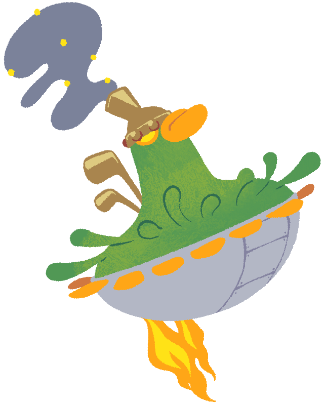

BelmontA powerful steam-powered Isogashimachine that looks like a duck. The propellers around the body create gusts of wind that turn into typhoons. Of course, once those typhoons are over, anyone affected is going to be busy repairing their house and clearing out the rubbish for weeks on end! |
 |